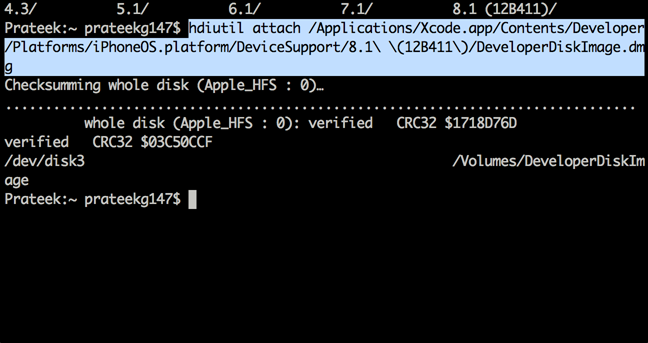

In this article we will learn about the LLDB debugger used by Apple’s Xcode for debugging applications, understand why it is better for security testing, and then learn how to use it to debug iOS applications.
The following excerpt is from Apple’s documentation.
ETHICAL HACKING TRAINING – RESOURCES (INFOSEC)
LLDB is Apple’s from the ground up replacement for GDB, developed in close coordination with the LLVM compilers to bring you state-of-the-art debugging with extensive capabilities in flow control and data inspection. Starting with Xcode 5, all new and preexisting development projects are automatically reconfigured to use LLDB. The standard LLDB installation provides you with an extensive set of commands designed to be compatible with familiar GDB commands. In addition to using the standard configuration, you can easily customize LLDB to suit your needs
A good way to start leaning about the LLDB debugger is to watch this video from WWDC 2014.
But the question that remains is, why is LLDB better than GDB ?
To sum it up, there are a few reasons for that.
- It works well for iOS 8
- LLDB is much faster, has support for multithread programming, and is scriptable.
- LLDB understands the dot syntax. You can use something like po self.propertyNameor even po instanceVariable to find any value of a property or instance variable while debugging applications.
- It has plug-in support for functionality and extensions.
To debug applications on an iOS device, we will use the command line utility debugserver which is used by Apple’s Xcode to debug applications on the device. Usually, it gets installed on the device automatically when a device is marked for development, which requires a valid provisioning profile, but it can only debug applications that were signed by that particular provisioning profile. This is because of lack of entitlement to allow task_for_pid(). Hence, in order to debug any application, we must create a new entitlement file with the mentioned flag set to true, sign the debug server application with that entitlement file, and then deploy the console app to the device. Please note that the current location of debugserver application on the Mac is a read-only ramdisk, hence the application must be copied to a different location before signing with the new entitlement file.
Hence, the first step to do is to mount Xcode’s developer disk image on your Mac and copy the debugserver binary to a seperate location where you can resign it. Use the following command.
hdiutil attach /Applications/Xcode.app/Contents/Developer/Platforms/iPhoneOS.platform/DeviceSupport/[ios version]\ \(12B411\)/DeveloperDiskImage.dmg

Once this is done, create a new file with the name entitlements.plist and enter the following data in it.
<?xml version="1.0" encoding="UTF-8"?> <!DOCTYPE plist PUBLIC "-//Apple//DTD PLIST 1.0//EN" "http://www.apple.com/DTDs/ PropertyList-1.0.dtd"> <key>com.apple.springboard.debugapplications <true/> <key>run-unsigned-code <true/> <key>get-task-allow <true/> <key>task_for_pid-allow <true/>
Now, you have to resign the debugserver binary with the new entitlements file.
codesign -s – –entitlements entitlements.plist -f debugserver
Once this is done, deploy the binary to the device. To start debugserver on the device, use the command shown below, and also specify the name of the application you want to hook to, which in this case is Twitter.
Now on your computer, start lldb to enter the lldb interpreter. Now use the following commands as shown below to to connect to the device. Make sure to replace the IP address here with the IP address of your device.
Once this is done, you will see that you are successfully able to debug the application.

Now you can use the po command to print out specific objects instantiated in the application.
The syntax for LLDB is a bit different. For e.g, here is the syntax for printing all the register variables.
That’s it for this article. In this article, we learnt how to deploy LLDB to the device and use it to run some basic commands. In the next article, we will look at some advanced usage of LLDB and how it can be used to find sensitive information in memory.